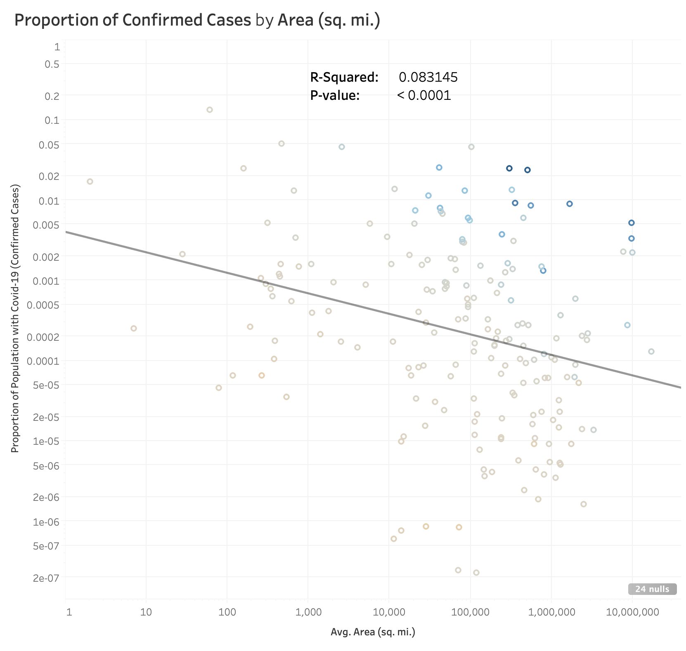

Since the first recorded case of Covid-19 in November 2019, there have been more than 1 million reported cases worldwide. Every day thousands of new cases of this infectious disease are being reported. This visualization is
Please start scrolling to see visualizations.
Different countries have different rates of spread.
Countries labeled in red have some of the fastest growing cases while countries in blue have some of the slowest.
You can select more countries to add to the graph in the country/region menu box.
Possible Insights
The Effect of Government Measures on Virus Spread
China is currently the most successful case study of a fast growing country "flattening the curve". Comparing what they did to South Korea (a country with low growth the whole time), we can see how the government approaches were different.
Social Distancing Measures + Mask Wearing
Correlation between Population Density, Area, and Virus Spread
Covid-19 confirmed cases is negatively correlated with average area per person by positively correlated with population density.
Possible Insights
Correlation between Avg Phones, Avg Birthrate, and Virus Spread
The average number of phones per 1000 people is positively correlated with spread while average birthrate is negatively correlated with spread.
Possible Insights
Other Country-Level Attributes
You can explore other country-level attributes on the plot here.
However, according to researchers, Covid-19 is not mutating very fast compared to other viruses (Huang 2020). This means we should not see drastically different fatality or spread rates in different places/countries. From the graph above, we can see that is not true, some countries are clearly more impacted by Covid-19 than others. Below, we will look into other possible factors that may be affecting Covid-19.
South Korea implemented social distancing measures and made several public announcements early in their curve. Near the peak of their curve, they mandated remote work and mask-wearing for everyone. Similarly with China, we can see near the peak of their curve, they suspended businesses and mandated remote schooling and work. They also announced cash hygiene and public mask-wearing guidelines.
This seems to indicate social distancing measures and mask wearing may be good protective measures other countries should take. You can also explore and compare other countries and their government measures.

Countries that are more spread out with more area between people tend to have lower spread rates while densely populated countries tend to have higher spread rates.
Average number of phones could be a proxy for income; i.e. countries with higher income per person tend to have higher number of cases. Similarly, countries with higher birthrates are correlated with lower Covid-19 cases. There are studies that show less-developed countries tend to have higher birthrates rates (Price 2013). This means Covid-19 appears to be spreading faster in developed countries.
Country-Level Attributes
Thank you for viewing. Here is a link to all of the interactive graphs in Tableau Public.